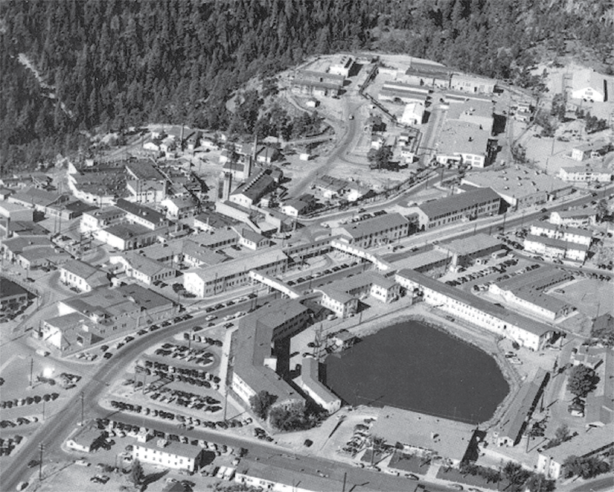

1942 - 1946
El Proyecto Manhattan
El Proyecto Manhattan fue un proyecto de investigación y desarrollo llevado a cabo durante la Segunda Guerra Mundial que produjo las primeras armas nucleares, liderado por los Estados Unidos con el apoyo del Reino Unido y Canadá.
El General Leslie R. Groves dirigió el proyecto, mientras que el físico J. Robert Oppenheimer fue el director del Laboratorio de Los Álamos, donde se diseñaron y construyeron las bombas propiamente dichas en absoluto secreto en el desierto de Nuevo México.

Vista del complejo secreto en Los Álamos, Nuevo México.
16 de Julio de 1945
La Prueba Trinity
La culminación de años de teoría y experimentación se materializó en el desierto de Jornada del Muerto. A las 5:29 a.m., se detonó el dispositivo "Gadget", una bomba de plutonio de implosión, marcando la primera explosión nuclear en la historia de la humanidad.
Al observar la bola de fuego, Oppenheimer recordó un verso del texto hindú Bhagavad Gita: "Ahora me he convertido en la Muerte, el destructor de mundos", una cita que definiría su legado moral para siempre.
1954
La Caída Política: Las Audiencias de Seguridad
A pesar de ser aclamado como un héroe nacional tras la guerra, la postura vocal de Oppenheimer contra la carrera armamentista (especialmente la bomba de hidrógeno) y sus asociaciones pasadas con personas de izquierda lo convirtieron en un objetivo durante la era McCarthy.
En una audiencia de seguridad fuertemente orquestada (impulsada en gran parte por Lewis Strauss), se le revocó su autorización de seguridad, despojándolo de su influencia política y aislándolo de la comunidad científica nuclear que él mismo había ayudado a crear.